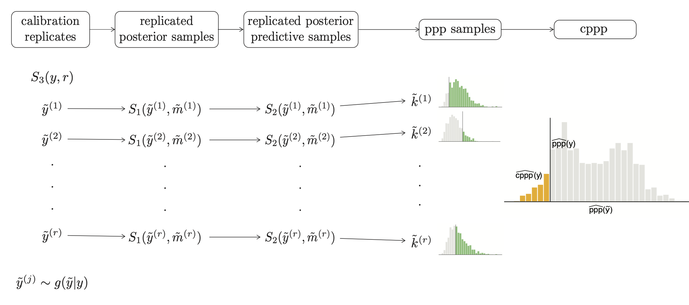

Computational methods and software
Fast Bayesian model assessment
Posterior predictive checks are probably the most popular tool for Bayesian model assessment. The rationale behind is fairly simple: if the model I am using is “good”, then new (simulated) data from my model should be similar to the original observed data. Similarity is sometimes assessed using graphical comparisons, but more often some statistics of the the data are used, which can be accompanied by a posterior predictive p-value (ppp).
These ppps are challenging to interpret due to the fact that they do not share the same properties of frequentist p-values, i.e. they are not uniformly distributed under the null hypothesis that the model did really generate the data. Calibration is a way to adjust the interpretation of the ppps, which can be done in general using resampling methods. This translates into performing MCMC estimation multiple times. Nevertheless to say, no-one really does this.
I have some work on approximating calibrated posterior predictive p-values ( arXiV preprint) to a useful degree of accuracy much faster than would be achieved by a naive implementation.
We have implemented the method using the NIMBLE package, with code and examples available on github. Ultimately, we aim to implement and release the method in a general R package able to interface not only with nimble, but also other MCMC packages such as Stan and JAGS.
Algorithms comparison
I have some interest in defining good practices to compare performance of different algorithms for Bayesian estimation. Considering only MCMC-based algorithms, measures based on the convergence rates have been proposed in the literature, but often these measures overlook the computational requirements for achieving improvements in convergence rate: for example, fast convergence at an extreme computational cost is not necessarily optimal.
Although I do not have answers to this problem yet, I have put some work (together with other nimble-devs) in developing compareMCMCs, an R-package for running, managing, and comparing results from different MCMC packages such as NIMBLE, JAGS, and Stan.
compareMCMCs, is on CRAN and github, where you can leave feedback and requests. We also have a small paper on JOSS.
- Posted on:
- February 3, 2023
- Length:
- 2 minute read, 347 words
- See Also: